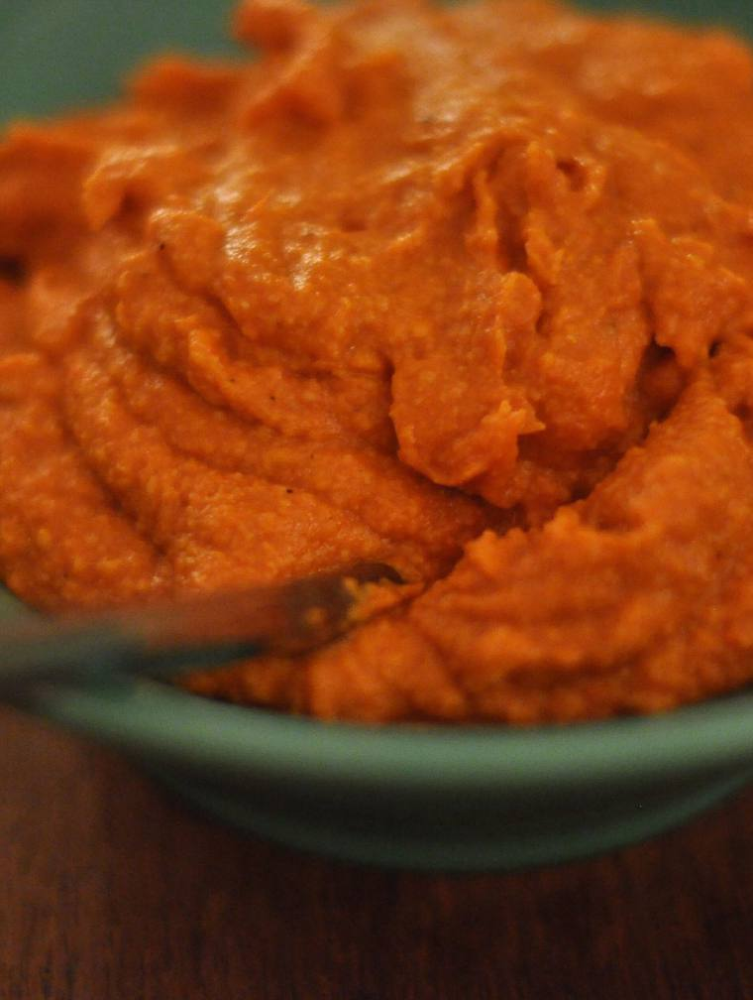

Sauces

Sauces
Salsa romesco
Amandes, noisettes et ñoras de Tarragone
Préparation : 30 min
Repos : 1 h
Cuisson : 20 min
Ingrédients (pour 4 personnes)
- 3 ñoras (poivrons ronds séchés)
- 2 tomates
- 4 gousses d’ail
- 15 g d’amandes grillées
- 15 g de noisettes
- 2 tranches de pain frit
- 1 guindilla (piment sec)
- 1 cuillère à café de vinaigre de vin rouge
- huile d’olive, persil, sel
Quantités adaptées. Les temps de cuisson ne sont pas recalculés.
- Tremper les ñoras 1 heure dans l’eau chaude, prélever leur pulpe.
- Rôtir les tomates au four à 180 °C environ 20 minutes, peler, épépiner.
- Revenir 1 minute piment et pulpe dans une cuillerée d’huile.
- Piler avec l’ail, puis ajouter amandes, noisettes, persil, pain, et enfin tomates.
- Incorporer huile, vinaigre et sel en remuant.
À conserver au froid, jamais au placard
Au réfrigérateur entre 0 et 4 °C : 3 jours au plus. Ne pas congeler. L’ail dans l’huile présente un risque de botulisme : jamais hors du froid.
D’après la Real Academia de Gastronomía. Traduit et reformulé, durée du four précisée.